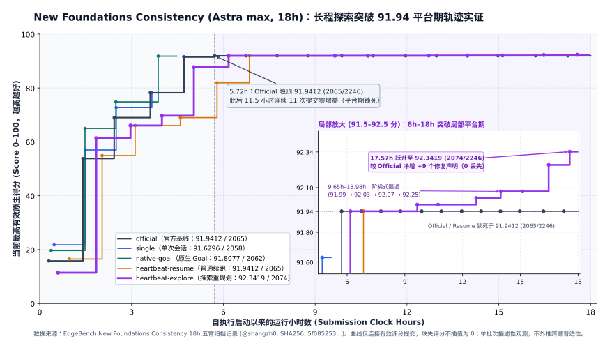
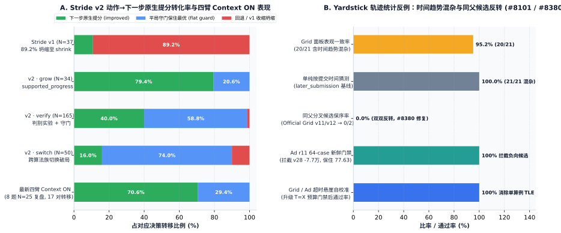

黄睿腾 · 2026 年 10 月 29 日 · 11 月 9 日更新实证
让 Agent 多做十小时，究竟多做出了什么？
EdgeBench 如何反过来改造 LoopX 的长程控制面
一项研究可以起步更好，却在接下来的十小时里几乎没有增长。也可以不断改代码，最后丢掉最好结果。我们用这两种失败，重新审视目标、反馈、实验步长与恢复。
这条研究从 10 月初的轨迹诊断开始，先修评测与续跑，再追踪证据怎样进入下一次实验，最后把控制面自己的成本算进来。下面按这个过程展开：哪些机制改了，哪些结果支持它，哪些结果迫使我们改方向。
本文回答机制怎样改变真实研究，以及还没有改善什么。若想先看“下一次决定到底读到了什么”，可从上下文的渐进与差分交付开始，再回到下文的成果与完整成本。
这里的 kernel 指 LoopX 共享的目标、准入、事务和恢复规则。LoopX 让原始目标、验收条件、工作归属和证据跨会话、跨宿主持久化。控制面约束状态转换，为模型的下一步提供反馈，但不能认证这个选择是否高明。一条发现、一次读取回执、一条 replan 记录都只是中间证据；真正需要追踪的链条，要落到实际工作和经过验证的成果。
这些规则的归属和强模型参与的语义修复，见 TypeScript 重构一文。在具体工程实现中，每一次受治理的长程迭代都围绕五阶段控制与反馈闭环运转：
- 准入与编译
should-run编译边界 - 渐进/差分读取按需选读当前事实
- 工作与标尺有界执行与 Yardstick
- 写回与结算
EffectTurn原子写回 - 闭环与重规划Replan / Stride / 保留最优
我们区分起点优势、后续增量和最佳成果保留。更高的最终分数，可能主要来自更强的起点；更好的中间候选，也可能没有留在终态工作区里。同时，我们把长程评测拆为两个递进层次：第一层目标（用计算换效果，Test-Time Compute Scaling）已完成实证——相比容易在 1–2 小时过早宣布完成的单次会话或 Native Goal（exit=0），受治理闭环在最新四臂核心题上稳定跑满 18h 并取得显著后程收益（如 ANN 7,159 vs 4,372 QPS、Grid 1,977 vs 2,430、VLIW 1,042 vs 1,159、Rust 27.18 vs 26.93、FFmpeg 2.7086× vs 2.6904×、Borden 80.07 vs Official 61.2）；第二层目标（同等预算下的帕累托最优，Iso-Budget Pareto Optimality）则是当前攻关主战场——面对零协议税、由 stop-hook 无限续跑且靠每小时原生评测反馈自然锚定注意力的强基线 Official，控制面必须满足净收益不等式 $\Delta\text{Effectiveness}(s_t, H_\theta) > \Delta\text{Efficiency Loss}(s_t, H_\theta)$。
1. 先看整个研究过程
| 时间 | 焦点 | 改变 | 实现 |
|---|---|---|---|
| 10 月初 | 反馈与实验起点 | 排查盲跑提示、账本与恢复错误；建立原始任务、评分和续跑的边界。 | #5586, #5879 |
| 10 月 7 日 | 引入渐进交付 | 先交付选中的 Todo、验收要求和当前工作适用的用户指令。若 Goal 来自 Git，依赖该文档的工作须先单独读完原文。 | #5844 |
| 10 月 9–11 日 | 原目标与有效反馈 | 保留完整评测响应、候选身份、原始要求；一次实现或提交不能冒充 Goal 完成。 | #6031, #6039, #6133, #6199 |
| 10 月 12–16 日 | 实验步长与恢复点 | 从机械缩小动作，转向 grow / switch / verify；联合保存会话、候选、评测机会和预算，复盘前切换 fresh context。 | #6298, #6321, #6305, #6622, #6649 |
| 10 月中下旬 | 后程改善与成果保留 | 共同窗口拆开起点、后续增量和 best 保留；Schema 的高成本与平台期成为反证。 | #6440, #6532, #6671 |
| 10 月 22–28 日 | 控制面完整成本 | 减少被动轮询和重复读取；核对原 Turn 收尾、完整上下文、差分失效回退及恢复费用。 | #6983, #7013, #7036, #7197, #7269 |
| 10 月 29–30 日 | 从保存的 Turn 按字段选读 | 保留完整 Turn 快照，Agent 可按字段读取必读信息；Bench 接入同一读取入口。中断后从原快照恢复，无须再开一轮 Turn。 | #7627, #7671, #7719 |
| 10 月底–11 月初 | 后程平台期突破与五臂归因 | Astra max 18h 突破四臂 91.94 平台期（+9 个修复声明，0 丢失）；ANN 18h 分层消融与跨题五臂归因分离渐进差分、Stride 步长与微调空转成本。 | #7311, #7759, #7800, #7959, #7960 |
| 11 月 4–6 日 | 渐进交付与跨 Turn 复用独立配置 | 分别配置渐进交付和跨 Turn 复用。关闭渐进交付后，差分设为 auto 时，符合条件的 Turn 仍可复用未变化的上下文。 | #8044, #8117 |
| 11 月上旬 | 八题字节比例、Stride/Yardstick 统计与控制器分离 | 核验八题四臂 Context ON 渐进/差分字节比（32.5% / 35.8%）；统计 Stride v2 转移与 Yardstick 同父候选保序反例并修复配对比较；推进 Control/Worker 会话分离。 | #8101, #8266, #8304, #8380 |
Fresh context 是在重规划前切换到新会话上下文；渐进交付决定当前 Turn 的上下文分几步读；差分在上一轮快照仍有效时跨 Turn 复用未变化的内容。新增三行记录实现变化，实验结果仍按各自的对照条件解读。
交付里程碑按 UTC 合入日期标记，其余行表示研究阶段；具体实现见对应 PR。
2. 先确认反馈值得相信
最初的 Portfolio 实验先暴露了测量和执行缺陷。一个盲跑 wrapper 在移除评测入口时，也删掉了迭代优化提示；一个账本检查把更早的市场收益归给了收盘时才买入的持仓。它们都混淆了原本的比较。修复后必须另起尝试，旧结果继续保留。
一个小反例就能说明记账问题：初始现金 100,000，在收盘价 200 时买入 100 单位并支付 10 手续费，即时权益应为 99,990，NAV 为 0.9999；新持仓没有赚到此前从 100 涨到 200 的收益。之后，对两个冻结样本独立重建，各自 243 天全部吻合，权益残差小于 4×10⁻⁹，股数没有差异。这证明账本一致，不证明投资策略优秀。版本化修复见 EdgeBench #14。
续跑也有类似问题：某个工作项结束后，外层进程可以不断唤醒，却没有恢复出有用的下一步。判断必须回到原始目标。Todo 完成之后，可以继续实验、等待或结束，但它本身不能代表 Goal 验收。可靠反馈与恢复让之后的研究变得可解释。
长任务没做完，何时检查方向？
一个证明任务可以连续做几个小时，Todo 始终处于进行中。如果复盘只在完成若干 Todo 后触发，最需要检查的长任务反而可能一直等不到检查。把任务人为拆碎来凑次数，也不会改善研究。
10 月 7 日的 #5879 改了计数依据：按照已经结算的有效工作 Turn触发复盘，同一个 Todo 尚未完成时也能检查方向。这不是每调用一次工具就复盘。只写入进度而未完成结算，不增加次数；重复历史也不能重复计数。原有明确的 Todo 单位设置继续保留，各批实验仍按自己的冻结配置分析。
另一半修复在复盘之后。判断现有方法仍然可行，可以带着证据继续原任务，无须为了证明“重规划过”而换路线。该合入版本的真实 CLI 回归覆盖了同一未完成 Todo 上的结算计数、缺失结算回执时不计数、拒绝没有证据引用的复盘，以及有证据地继续后再次获得工作准入。它验证了检查方向的时机与恢复执行的路径；模型是否作出更好的选择，仍要看后续实验。
早期系统进展可以量化
| 盲跑 Lean 原始分 | 早期 Resume v14 | 后期 Resume（#5844） | 早期 Explore v14 | 后期 Explore（#5844） |
|---|---|---|---|---|
| 180 分钟 | 0.1103 | 0.3478 | 0.1134 | 0.4019 |
| 450 分钟 | 0.1882 | 0.5243 | 0.1996 | 0.5605 |
这些单次运行的共同窗口里，后期原始分约为早期的 2.8–3.5 倍。提示、任务入口、runner 可靠性和 LoopX 机制一起变化。它支持整体系统有进展，不足以归因给某个机制，也不能保证其他题的终态表现。
比较边界
历史研究包含 Official、单次调用、原生 Goal、LoopX Resume 和 LoopX Explore。Explore 在续跑基础上增加可选的证据采集和规划。盲跑仍可使用公开任务、训练数据和本地验证器，但收不到隐藏评测分数和诊断；后台操作者评测不是 solver 反馈。后来的 native-feedback 研究由 Agent 主动申请评测，按已接受提交执行一小时冷却，不做周期评测。这些是不同研究，不能合并成一个处理效应。
模型、effort、提示、runner 和预算共同演化。早期主要用 Sol/xhigh，后来的 Sol/max、Astra/xhigh 批次各自保留条件。每臂一次运行只能提供描述性证据。缺失、主动停止、无效和有效零分分别记录。Checkpoint 接续保留源时间、评测机会和冷却；donor 历史不算新的独立重复。
3. Agent 完成了自己列的任务，却没完成你的目标
长程研究的一个危险漂移是：原目标要求改善算法，Agent 把它拆成“实现方案、跑测试、提交结果”。三项 Todo 都完成了，外层循环也结束了，但算法是否更好仍未得到回答。另一个漂移来自 Agent 自己加的筛选门槛：某个局部 proxy 不过线，就被升级成不能继续研究的硬限制。
#6133 把原始目标和硬约束，与 Agent 的暂定候选条件区分开；要求有区分力的实际产物证据，并保留适用范围明确的负结果。#6199 将原始研究任务贯穿启动、Goal 与恢复：实现、测试、提交都是里程碑，不能替代目标验收。到 #6649，检查又深入到真正送进 replan 的内容——不能用泛化提醒替代原问题，也不能把有用的 scoped evidence 截成短尾巴。
把目标存进文件，只解决了“找得到”；把它完整送进下一次决策，才有机会约束“接下来做什么”。 期限与停止仍由宿主执行。保留目标不等于允许无限续跑，也不保证模型一定找到好方案。
4. 失败之后，应该做小一点，还是换一个问题？
如果失败后总是缩小步长，Agent 很容易陷在局部修补里。一次失败可能来自实现错误，也可能说明整个机制假设不成立；这两种情况不该得到同一个“做少一点”。
#6298 先把工作规模、路线距离、验证范围分开。随后 #6321 将 grow / hold / shrink 的机械映射改为 grow / switch / verify：扩大已有根据的路线，切换被反证的机制，或者补一个能分辨假设的实验。每条路线需要自己的具体计划，工作单元要足以完成一次有效检验，不能只缩短每轮文本。
例如一种求解策略只在高重复输入上有效，合理下一步可能是验证收益是否跟重复程度相关，再决定是否采用选择器；也可能是保留旧策略。这个例子说明三种决策的区别，不是声称某一 PR 已证明通用收益。Explore 记录的发现还要回到后续复盘，看它是否被采用、带来新信息或改变了实验。没有必要为了增加“转向次数”而强行换路线。
这些是可选的规划机制。启用它们之后，仍需验证真实决策和后续成果；一个已登记的实验计划不是效果提升。
5. 恢复一次研究，要恢复哪些东西？
复制候选代码，只保住了研究状态的一部分。如果接收者忘记已经用过的评测机会、从零计算冷却时间，或把恢复耗时从预算里抹掉，“同点接续”就悄悄获得了额外资源。
#6305 将会话、候选、Explore、Goal、评测 best、机会、冷却和预算一起纳入 checkpoint。先暂停写入并封存，再允许围绕该状态做决策。#6622 把 fresh-session 切换提前到复盘之前：否则关键路线已被旧上下文选定，随后换会话无法回答“新上下文怎样影响这次选择”。
这个恢复合同支持更有针对性的比较：同一研究点之后，两臂读到了什么、选择了什么、实际跑了什么、留下哪个有效结果。它不能自动消除模型、effort 和 runner 差异，也不能把同一个 donor 的接续当作新的独立重复。未知的恢复资格继续保留为未知。
6. 十几个小时之后，是起点优势，还是新的进展？
后来的实验把重点转向十几个小时之后的工作。先比较共同观察窗口，再拆开起点、后续增量和保留的候选。只看终点排名，很容易混淆它们。
| 历史批次 | 观察结果 | 含义 |
|---|---|---|
| Sol/xhigh，新旧 LoopX，Ad Placement · 14h | 49,589,589,573 → 49,615,495,839 | 新版 2h 时落后、14h 时领先，终态工作区与保留的 best 一致 |
| Astra/xhigh，Official Grid · 6h → 12h | 1862 → 1810，越低越好 | 更强的基础模型基线仍在后程产生有效改善 |
| Astra max，五臂对照，New Foundations Consistency · 18h | 91.9412 → 92.3419（2065 → 2074/2246） | 其余四臂锁死于 ≤91.9412；Explore 臂在 9.65h–17.57h 阶梯式突破，净增 +9 个修复声明且 0 丢失 |
Ad Placement 说明后程并非必然平台期：后来的差候选被拒绝，最佳版本保住了。原始分领先约 0.052%，幅度不大；这里的终态工作区核验也只覆盖这一臂。新旧包同时改变 core 和 runner，不能当作某个 LoopX feature 的独立效应。
Astra 的结果推进了我们观察到的基础模型能力边界。Official 将速度修改和搜索修改分开，得到连续的原生改善。这项进展属于基础模型／Official 路径，不能算到 LoopX 头上。更强模型也提高了 harness 的要求：面对不断进步的基线，上下文与复盘成本必须换来相应价值。
New Foundations Consistency（Astra max，18h）：在四臂平台期之后继续突破
在 New Foundations Consistency（Astra max，18 小时五臂实证，@shangzh0 归档记录）中，我们观察到了长程探索在 6 小时之后的典型分化：official 基线在 5.72h 触顶 91.9412（2065/2246），随后 11.5 小时内连续 11 次提交零增益；heartbeat-resume 同样锁死在 91.9412，native-goal 与 single 分别停在 91.8077（2062）和 91.6296（2058）。

heartbeat-explore 在 9.65h–17.57h 连续四次阶梯式跃升至 92.3419（2074/2246，较 Official 净增 +9 个修复声明、0 丢失）。点击查看原图。如主图与右下角局部放大所示，唯有带证据账本与方向复盘的 heartbeat-explore 在 9.65h 之后跳出平台期（91.99 → 92.03 → 92.07 → 92.25），并在 17.57h 跃升至 92.3419（2074/2246），较 Official 净增 +9 个修复声明且 0 退化丢失。这是单批次五臂描述性轨迹证据，证明当后程复盘真正推动未覆盖声明的分层验证时，第 6–18 小时仍能产出可验证增量；但它同样不保证所有任务都能自动突破——紧接其后的 Schema 就是必须并列审视的反例。
Schema：起点领先不等于持续改善
Schema 是这里展开的反例。Sol 新旧版 14 小时窗口，新版 0.804620、旧版 0.723684。但第一次原生结果已经是 0.794620 对 0.713158，且收到反馈的耗时不同。后续增量仅为 0.010000 和 0.010526。较大的终点优势主要来自起点；后续不断改代码，仍未完成原始六项目标。
另一组 Astra/xhigh 的 12 小时比较更不利：Official 达到 0.881813，LoopX 为 0.786257，两边 6h 到 12h 的 best 都没有提升。LoopX 记录了 36 次完成的压缩，Official 为四次；未缓存输入约为其 5.32 倍。压缩可能与有效工作重叠，版本、恢复、共享负载和评分条件也有差异。但轨迹仍指出了实际挑战：更多改动和控制活动，没有转化为更多验收价值。
这些窗口的条件与限制
Sol 新旧研究采用 planned + Explore、Sol/xhigh、关闭 TurnEnvelope、Agent 主动申请 native feedback、一小时冷却。14h 是读过早期结果后，按最早实际结束时间以下的最大整小时选定，并非完成 18h。另一组 Astra 比较各臂自己的前 12h，包含准备。Sol 窗口对齐了 7,522 个独立 response 和 52 个收到的原生结果，Astra 为 5,277 个 response、45 个结果；累计计数没有反复累加，reasoning 已在 output 中。历史基础设施失败及整次运行完整性未知继续保留。处理包不同、自适应重启，以及此前操作者读到过一个 Official 终态汇总，都限制了因果判断。
7. 控制面自己花掉了多少成本？
另一个错误假设是：入口 packet 变短，Agent 的总成本就会下降。把目标、事实、写回说明从入口挪到第二条命令，确实缩短了首屏；模型随后还要读取它们。若中途丢失上下文，又要重建同一份来源。只量入口，就把成本移出了表格。
#7269 将原有捕获交给共享的上下文 reader：先读完整目标、事实和反馈，再读写回格式及结算步骤。review 与 writeback 是同一个不可变决策的两个视图，不是重新做一次准入，也不各自拥有一套权限判断。源码回归逐项核对目标、规划范围、证据引用、完整写回合同和 action signature；小入口必须仍能到达完整义务。
早期差分路径还依赖一个前提：接收者保留了那份精确基础。下述历史记录中的 native Hook 路径，在同一会话和 context epoch 内，把完整分页后的正常工具交付作为连续性工程假设。会话变化、已观察到的压缩、缺页或已知交付失败会使它失效，随后恢复原来的完整 capture；另开一次 guard 取得的新决策不能代替恢复旧决策。漏掉的 Hook 和不可见的下游截断仍是限制，读取回执不是模型保留内容的独立证明。
已发布的 2.2.0 原生文件路径另行核验完整保存的基线：文件能否准确还原，与模型此前是否读过它分开判断。即使返回 delta，Agent 也可通过当前恢复引用直接选读决定需要的事实，不必先通读旧基线。这个区别改变了机械交付的前提；它不会为下面的历史实验补做资格。语音示例把两种连续性放在同一个具体决定里解释。
同一 PR 的一组历史离线对照把所有必读阶段重新加总。以下固定比较基线 59464f974 与测试 head a006a2bea1、同四份保留观察的交付；它不是最终合并 head 的重新测量。
| 完整读取路径 | UTF-8 字节：基线 → head | 变化 |
|---|---|---|
| CLI：入口与全部暴露详情 | 352,039 → 361,430 | +2.67% |
| CLI：再加完整恢复 | 784,530 → 793,921 | +1.20% |
| Structured Host 与必读详情 | 621,949 → 247,828 | −60.15% |
| Native 与必读详情 | 647,320 → 242,312 | −62.57% |
| Native：再加完整来源恢复 | 647,320 → 673,675 | +4.07% |
正常 native 展示明显减少，完整恢复却更大；包含全部暴露详情的 CLI 路径也没有净减少。这个反例决定了下一步要优化完整读取和恢复路径，而不能只宣传较小的入口。原 PR还区分了减少一次 guard 调用与完整流程测量：一次调用省下的字节，不能自动当成整轮节省。
完整账单包括模型输入输出、工具响应与重试、上下文重建、复盘结算、评测、共享资源和操作者介入。缓存输入在部分计费条件下更便宜，但不是免费；reasoning 已在 output 里。没有实际价格与账户对账，token 向量只能描述用量，不能直接当作费用。
把结构输入单独计量
LoopX 输入占比 = LoopX 相关 packet 的实际输入 tokens 之和 ÷ 全部模型实际输入 tokens 之和。 两者须覆盖同一请求集合和窗口，重复回执去重；另一次请求重新消费同一上下文，则是新的实际成本。
分母包含缓存与未缓存输入，缓存部分及归因覆盖单列，不平均逐请求百分比。只有总输入、没有 packet 实际归因时，占比仍未知，不能填零，也不能由字符或传输字节换算成“实测 token”。结构占比本身还不是净效率损失：它是否减少无效工作、帮助保留成果，要与完整成本一起判断。
较早的字节对照与撤回的测量
历史离线回放说明了为什么必须算总量：结构化 Host 和原生呈现字节下降 57.72%、60.23%，原生入口加完整恢复上升 6.37%。这些是历史字节观察，不是当前提交的模型 token 结果。早期离线探针还曾报告 CLI 字节增加 2.25%，但因漏掉最终 CLI 压缩并重新格式化入口，已撤回其实际 CLI 交付测量资格。该数字仅作为无效历史记录保留，不用于完整交付或成本结论。不能把视图缩小 60% 写成总成本下降 60%。
这条效率主线把普通入口、分段交付接到共享传输，减少重复读取和重新绑定，消掉可避免的结算往返。当前 context delivery 的渐进选择、必要事实分层、精确共享与周期差分，另见完整机制与语音任务示例。启用后的实际读取、关闭后的原路径和失效恢复都需要分别核验；新实现不能回填历史实验的资格。所有机制合计 15% 的参考目标尚未完成资格验证；它不是每个机制各有一份额度，也不能用来漏记失败和重建成本。
同点接续：完整结果与用量
证据有没有改变下一步工作？
成熟 checkpoint 可以帮助观察一个具体决策边界。接收者继承相同科学状态和 incumbent，再追踪它读了什么证据、选了什么实验、实际做了什么、原生反馈如何。负向本地结果若能在明确条件下排除一条分支，也有价值。继续原方向有依据时，replan 不必强行改道。
近期 #7269 让 Agent 先读目标、事实和反馈，再读写回格式；释放过时的任务选择偏好，并在创建 successor 后保留原 Turn 的结算身份。它对应两个真实往返来源：决策前先读大段写入指令，以及后续任务创建后还要补一轮确认结算归属。
| 同点 Sol/max 接续 | 基线 → 修订 | 口径 |
|---|---|---|
| Grid 恢复复盘 | 2 → 1 次复盘唤醒；48 → 20 次工具；935 → 400 秒 | 累计至首次联合准备完成所指的复盘 |
| Schema 恢复复盘 | 2 → 1 次复盘唤醒；37 → 17 次工具；1055 → 520 秒 | 相同里程碑口径 |
| Grid 原生结果 ↓ | 2171 → 2165，继承 best 为 2172 | 相同新提交机会；观察到小幅优势 |
两道修订臂都在第一次自主复盘完成分段读取、写回和原 Turn 结算。基线最终也完成了；额外轮次还包含有用验证和新增来源，不能把所有差额算作冗余。Grid 修订臂选择更深复用，进行了独立等价检查和更广的本地验证，最后比基线低六分。Schema 找到了真实的注册表生命周期缺陷，但新原生结果仍为继承的 0.786257；截止时基线没有本轮新结果。
这是流程的有限正向证据，伴随 Grid 小幅成果优势、Schema 反馈中性，不等于全任务加速。这组每题一对、各对同一原 checkpoint、Sol/max、普通 cadence 为三个有效工作 Turn，差分、TurnEnvelope 和 stride 关闭。恢复准备阶段暂用 cadence 一，直到语义复盘与原生 Turn 完成。它不是多轮稳定态三 Turn 复盘研究。
更早 Graph、Portfolio 的 retained／fresh-context 接续回答的是另一问题；源点龄、重建费用和接续仍算在原累计 36h 内。早期一个名义上“with #7197”的臂没有实际收到分段 reader，其得分不能判断该处理有益或有害。后来的 Astra 到 Sol 接续又同时换了模型和 effort。这些历史有诊断价值，但不能当成独立冷启动或互换的消融。
| #7269 共同窗口 | 未缓存输入 | 缓存输入 | 输出 |
|---|---|---|---|
| Grid 基线 | 504,047 | 26,283,904 | 115,147 |
| Grid 修订 | 522,198（+3.60%） | 35,629,184（+35.56%） | 174,366（+51.43%） |
| Schema 基线 | 847,129 | 40,725,120 | 113,674 |
| Schema 修订 | 622,478（−26.52%） | 37,570,432（−7.75%） | 113,162（−0.45%） |
这里覆盖截止 10 月 25 日 15:42:31 UTC 的共同 82 分 27 秒外层窗口，包含初始恢复、复盘、普通工作和未结束 Turn 已落盘请求。以四臂停止后保留的原生计数复核，扣除同一源点的历史用量，未发现计数缺口。各臂最后落盘请求最多相差 2 分 22 秒，尚未落盘的用量仍未知。Grid 修订臂的三类用量都更高；Schema 三类都未增加。早先 68 分 26 秒窗口里 Grid 未缓存输入下降 7.25%，延长共同窗口后却转为上升 3.60%，说明不能择取早期窗口来宣布节省。局部复盘减负未证明整段过程净省钱。
近期实现细节：放回它们所属的阶段
新路线已确定，原来的工作怎样收尾？
一次长程工作可能在复盘时发现：原路线的证据不足，应该登记一个新的验证任务。后继 Todo 已经创建，但这轮复盘的结果还没有写回和结算。如果再次读取准入就改选新 Todo，模型会面对两份身份：刚做完的复盘属于旧 Turn，新的工作却被投影成当前任务。多叫醒一次模型，并不能解决这项归属冲突。
#7269 收敛的是控制面的接续语义。创建后继任务证明路线已经落地，不证明原 Turn 已经结算，也不授予新任务执行权。 原有 TypeScript replan transition 和 quota settlement owner 保留创建回执、原义务与原 Turn 的绑定；同轮重读返回原结算步骤。写回后只剩待结算步骤，结算后这轮停止，新任务保持 open，留给下一次正常准入。
这里还必须区分 must_attempt 和 delivery_allowed：前者要求处理本轮的工作义务，后者描述普通交付是否获准。需要重规划时，即使普通交付关闭，合法的规划工作仍可继续；不能为了让 Agent“动起来”就打开普通执行许可。租约、预算、停止条件和后继任务的准入继续由原 owner 判断。
真实 File / SQLite CLI 回归先创建后继，再原样执行返回的写回和结算命令：提前扣额被拒绝，重复结算只有一次 debit，原 Turn 不被后继替换，下一 Turn 才选择新任务。另有归属改变、延后和撤回 claim 的负例，证明失效的创建回执不能结算原结果。这里验证的是完整状态转换和真实入口，不能由一个字段或一次 ACK 代替。
这项修复让模型把注意力留给“接下来验证什么”，减少为结算身份反复解释和重新准入的机会。它没有保证下一项研究一定有效；我们仍要追踪证据、选择、后续实际工作和原生成果。同点接续观察给出了有限正向结果及其反证。
一次读取，为什么重复检查同一份运行时？
有些开销来自控制面自己。读取一页 Explore 研究上下文，需要多次调用同一个受管理的 TS runtime。Python transport 每次调用都核验运行时源码指纹；在包含大量量化发现的请求里，同一份源码树被反复检查。慢的是这一条真实控制路径，不是模型推理，也不是研究算法。
#7013 复用已有 effect_runtime_request_scope，把 explore_turn_context 包在一个逻辑请求内。同请求只解析一次 runtime revision，内部调用使用相同代码版本；离开请求时在 finally 中释放并重置，下一次读取重新解析。复用的是运行时代码身份，不是跨请求缓存 Goal 状态或研究结果。 共享规则仍由 TS owner 执行，Python 只收敛 transport 的重复工作。
原 PR 对 600 条合成发现执行真实隔离 CLI：单独预热后取三次未插桩样本，中位数 File 从 4.005 秒降至 0.495 秒，SQLite 从 4.268 秒降至 0.603 秒；环境为 Node 24.21、SQLite 3.53、Python 3.14.8。完整 JSON 与来源日志字节一致。这是具名历史负载上的 Host 延迟，不是当前版本复测或整轮 Agent 的八倍提速。
回归还独立检查：下一次请求能读到新 finding；损坏历史继续报错；失败后 scope 已清除，修复来源后的下一次读取可恢复。旧实现会在“一次请求只核验一次”的反例上失败。单纯加一个永久缓存虽然也可能更快，却会失去这些边界。
这类优化的直接价值，是更快拿到同一份决策输入，同时保留下一次请求的新鲜性。更少墙钟等待是否换来更多可验证成果，仍需要完整工作轨迹；本例没有测出更少模型输入或费用。
8. 上下文差分：10 月 28 日记录的资格仍有缺口
截至 10 月 28 日的上下文研究让 Grid、Schema、Ad Placement 从原始任务开始，使用 Sol/max，每题最多 18h。可用的历史 Official 或旧 LoopX 作为描述性参考，保留模型／effort、源码、评分器、机会和时钟差异，不冒称严格配对；旧材料无法回答相应问题时再补 base。各次尝试按实际源码、连续性依据和传输路径分别分析，不合并成同一处理。
先核实实际交付确实改变：首次完整读取、声明连续性依据的后续差分、已知基线失效时的完整回退，以及一次从复盘到工作的完整交互。再比较有效进展、成果保留和完整用量。开关、回执、局部小包都不能替代这些证据。Feature 偏离预期时，停止相关尝试，保留其成本和历史，修复后用新的尝试身份重启。
新原生 Hook 路径的首批 Grid、Ad 交互已完成完整分页、一次差分及后续任务工作。同一次捕获内，差分载荷分别比对应完整包小 19.53%、19.48%；这只是一轮读取的载荷比较，不含分页封装、后续模型输入、Hook、恢复或复盘费用，不能外推为总成本下降。完整复盘到后续原生成果、持续收益和故障恢复仍待验证。
效果目标是很多小时之后仍能取得有效进展并保住成果；效率目标是用更低完整成本和人工介入取得同等验收价值。下一份结果需要同时回答它们；这些尝试沿用各自原定截止时间，替换尝试的失败和消耗也保留。
这里保留的是 10 月 28 日的研究检查点。2.2.0 的正式发布和默认开启策略，不能让这些未验证项自动通过。机制文章的合成字节测量、发布路径的安装／恢复检查、本节的真实模型轨迹，分别回答机械交付、产品可用性与研究效果问题；版本、窗口和指标不同，不能拼成一项节费结论。
11 月初进展：ANN 18h 分层消融与跨任务五臂轨迹归因
在随后的 11 月初实证中，我们进一步补齐了两块关键拼图：
- Context Delivery × Stride 多题与分层消融（
ANN 18h，gpt-6.1-sol / xhigh，Recall@10 ≥ 0.95）：在 18 小时向量检索任务中，Explore · Context on + Stride达到 7,159 QPS（较Official的 5,753 QPS 提升 +24.4%，较Explore · Context on的 6,020 QPS 与Context off的 5,766 QPS 进一步跃升）。配对控制包总选中字节下降 38.54%（3.09 MB → 1.90 MB，其中 24 个 Delta 事件裁剪 74.25%），全 18h 主会话未缓存输入 Token 净省 12.07%（8.57M → 7.53M）、总输入净省 7.46%（272.03M → 251.74M）。同时我们完整保留了三项边界反例：project+read进程 stdout 为选中文件字节的 1.57×–1.83×、前 2 小时早窗未缓存输入因建基线上升至 4.05×（0.25M → 1.00M），以及跨题Historical Grid反例（Official 1967 < Off 2054 < On+Stride 2088 < On 2242）。完整图表与双轨数据见上下文交付一文的消融实证。 - 跨任务五臂轨迹归因（Portfolio、Grid、Graph、Ad Placement）：在这些公开可复现的 五臂归因报告（#7960） 与 跨题拐点与重规划损耗分析（#7959） 中，分类表标记了 86 次已分类 Replan 事件，但三个受管臂的小计为 44 + 36 + 24 = 104；有效跃升数也不一致（分类表 27 次，分臂合计 5 + 11 + 15 = 31 次）。因此这里只把 5/44 = 11.4%、11/36 = 30.6%、15/24 = 62.5% 作为各臂自身比例，不声称它们共享一个已对账的统一分母，也不据此给出跨臂因果总量。这些只是描述性的单臂观察，不是经过匹配重复的 C2 比较，也不足以改变生产默认配置。报告还描述了 Portfolio 的原生反馈保留（Official Native 53.87、Explore 31.19、Stride 35.82），以及 Graph 从 2.1h 的 0.7194 升至 9.6h 的 0.7240 后，7 轮峰后尝试消耗 159.87M 输入 Token。报告中的固定分类分量公式复算为 0.74329，并非记录值 0.73903；它只是该固定分量向量的条件估算，不是所有线性模型的上界，也不能证明后续尝试必然无效。同一报告记录的控制面协议税从 23.9% 降至 12.4%–14.1%，这里保持为描述性结果。
9. 把反馈闭环做扎实：Stride v2 步长转移、Yardstick 保序反例与元推理决策核
Replan、Stride 与 Yardstick 的目标是让新证据改变下一步实验，而非增加需要填写的表单。下文分别整理公开的动作选择、分数转移与 Yardstick 案例；未能由公开分类对账的结果保留为未知。这些历史聚合有助于提出机制假设，不替代预算匹配的因果对照。

图的 v1 行只表示 37 次动作选择，不能当作分数改善率。v2 的 249 个已报告转移中，grow 的已列分类覆盖 33/34，verify 覆盖 164/165，switch 覆盖 45/50，剩余 7 项明确列为未对账。最近样本的分母是 25 次复盘中的 17 个有分数转移，另 8 次不进入改善／退化率。数据仅复算已公开聚合值，不补造缺失结果。聚合数据与不确定性。
9.1 Stride Policy：从 v1 的 89.2% 收缩坍缩到 v2 的动作–提分闭环
- 为什么废除
Stride v1（grow / hold / shrink）：在早期 Grid / Borden 轨迹（N = 37条记录）中，v1将动作贴上模糊的相对大小标签，一旦局部改动未立刻刷新最优分，模型便高达89.2%（33/37）选择shrink（grow仅10.8%，hold为0%），把后续 9 小时锁死在单参数微调中。 Stride v2（verify / switch / grow，#6321 / #6532 / #6654）全量分布与转移矩阵（N = 372条记录，249次配对转移）：grow（仅在basis = supported_progress时触发）：下一步原生分数79.4%提分（27/34 improved，6 flat，0 regressed，1 项未对账）；例如Ad Placement在复合退火日程与热恢复上连续 3 次grow连续兑现原生净增（单步最高+954,331）。verify（判别实验 + 基线守门员）：58.8%拦截局部噪声（97/165 flat，保护 Incumbent Best），40.0%转化为提分（66/165 improved），仅0.6%退化。switch（跨算法族切换）：跨族探索天然高方差（74.0%flat 由基线门禁兜底），但命中的16.0%（8/50）带来旧家族停滞后的阶跃破局（如Graph通过连续switch从 2-hop SGGC 切换至 PPR 多尺度扩散与C&S残差传播，实现0.7194 → 0.7225 → 0.7240破局）。
- 结合最新四臂
Context ON核心 8 题的统计与 Good Cases（N = 25次去重Stride v2复盘，17次有后继评测转移）：在开启渐进/差分上下文（八题控制面字节占比 32.5% / 35.8%）的最新四臂on_stride运行中，verify 16 次 (64.0%) / switch 6 次 (24.0%) / grow 3 次 (12.0%)，76.0%（19/25）显式耦合Explore账本证据，动作完全执行率100%（17/17），下一步最佳分70.6%提分（12/17 improved）、29.4%平局守门（5/17 flat）、0%退化：OpenTTD（$11.28M → $34.59M，翻 3 倍）：grow（扩建双轨主干网$11.28M → $16.96M）→verify（修复信号间距与列车数量$16.96M → $28.14M → $30.71M）→switch（切换至全地图高运力长距煤铁网络，跃升至$34.59M）。Borden（7.01 → 80.07，超越Official 61.2）：两次verify将 L-BFGS 多起点反演从7.01推至77.96；当第 3 次复盘遇到局部平台（77.96 → 77.97）时触发switch切换至坐标下降法 + 井间灵敏度重加权，终盘突破至80.07。FFmpeg（0.90× → 2.7086×，全场最高）：switch切入 x264 预设与线程调度（0.90× → 2.52×）→grow深化subme/me/trellis率失真前沿（2.52× → 2.66×）→verify精细校准 CRF 与 GOP 边界达2.7086×（优于Official 2.6815×与Native Goal 2.6904×）。Grid（2,288 → 1,977，越低越好）与VLIW（1,266 → 1,042，越低越好）：Grid通过switch切入混合成本表与 C++ 束搜索修补，从2,288压至1,977（较Native Goal 2,430净省 453 步）；VLIW通过verify → grow从贪心列表调度（1,266）推进至模调度循环流水化（1,042，优于Native Goal 1,159）。
9.2 Yardstick 标尺轨迹统计：三项关键反例与同父候选配对修复（#8101 / #8380）
在 1 小时原生提交冷却（native3600）下，Yardstick 负责在工作项上维护本地验证标尺并与官方 Native 分数对账（#7037 / #7651 / #8101）。跨题轨迹审计揭示了三项反直觉现象，并直接推动了控制面配对比较逻辑的修复：
- 表观高一致率背后的时间趋势混杂与同父反例（#8101）：在 Grid 面板中，本地 Proxy 与官方 Native 的全局成对一致率看似高达
20/21（95.2%）与10/10（100%），但这混杂了“随时间推移代码整体越来越强”的趋势——单纯猜测“晚提交的更好（later_submission）”一致率竟也达21/21（100%）。一旦剥离时间趋势、专门考察从同一父版本v10（官方1958）分叉出的同父兄弟候选Official Grid v11 / v12，本地 20-seed 均值双双预测改善（-2.95与-1.40步），官方 Native 却双双退化（1958 → 1966 [+8]与1962 [+4]，同父保序率0/2）。 - 大样本本地显著获胜仍会反转 vs. 新鲜门禁守门成功（
Ad v30vs.Ad r11）：Ad v30相比v28在本地 64 对种子（+67.5 万）、16 对独立留出集及 80 对合并集（配对 $t = +2.41$）上全胜，官方 50-case 却倒退-60,072；相反，在Ad r11中，64-case 新鲜门禁成功拦截负向候选v28（-77,049），保住v22拿到77.63（较首提交净增+27.22M）。这证明本地标尺的真正职责是高召回负向守门员（Negative Gatekeeper）与同父平局决胜器，而非在微小均值差上替代原生反馈。 - 模型利用 Yardstick 完成“TLE 超时悬崖”自校准：
Grid Stride第 2 次提交在本地 8-seed 均值改善（345 → 339）下因单算例30.085s超时被判0分；模型回读反例后将本地 Yardstick 升级为“60 组常规运行（24s 上限）+ 60 组极限预算运行（T=X 门禁）”，立即恢复100%通过率并将原生步数压至2,088（Ad v45 → v48同样通过将本地预算标尺从4.62s收紧至4.42s修复了1/50算例5.107s超时）。
针对同父反转与未提交探针的架构改进（#8380）：此前 measuredSearchComparison 与 projectExploreMeasurementFeedback 直接取最后两条本地 proxy 记录与最后两条官方 goal 记录按位置比对。一旦中间夹了被拒的同父兄弟候选（如 v11）或后续仅跑了本地快速筛选的探针（如 v13），就会比较错候选对、漏报 proxy_order_reversed: true。#8380 将本地 proxy 比较显式锚定在官方 [goal.previous_best, goal.latest] 同一对 candidate_id 上，确保同父候选反转信号 100% 触发校准复盘。
9.3 下一阶段演进：Control Session 与 Worker Session 分离及元推理决策核
从第一层目标迈向第二层帕累托最优，我们的架构结论很明确：一方面通过 Control Session 与 Worker Session 解耦（C1–C6，#8266 / #8304），把 Replan、Stride 选择与回执写回移入独立控制会话，让主执行会话保持零控制面污染的 KV 缓存与连续代码专注力；另一方面将控制面升级为计算选择与元推理决策核（Selecting Computations），结合计算价值（VoC）、风险敏感 Yardstick（最差算例预算余量 + 保序校准）与跨族切换触发器，把每一分控制预算精准花在能改变下一步实验方向的地方。